实际 Vue /graph 页面，7845 历史节点 / 11412 原边，IAB 1600×900。P2.3 为三维透视，其余为固定投影：不是逐像素相同相机；旋臂、社区和展示深度不代表正式职业分类或语义距离。完整操作、来源与性能限制见 报告。
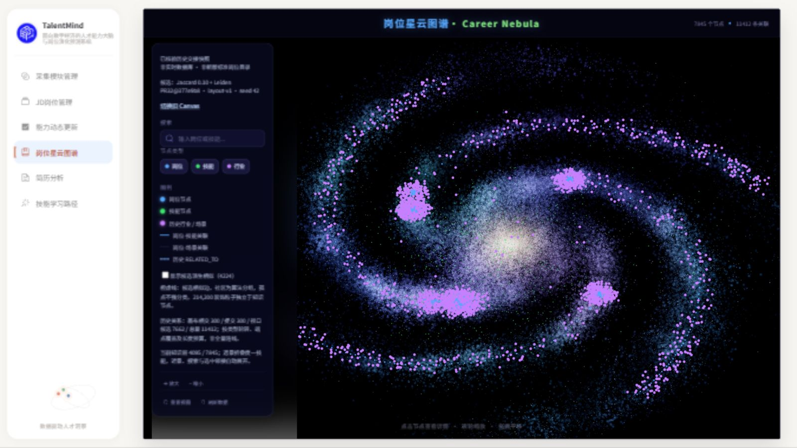
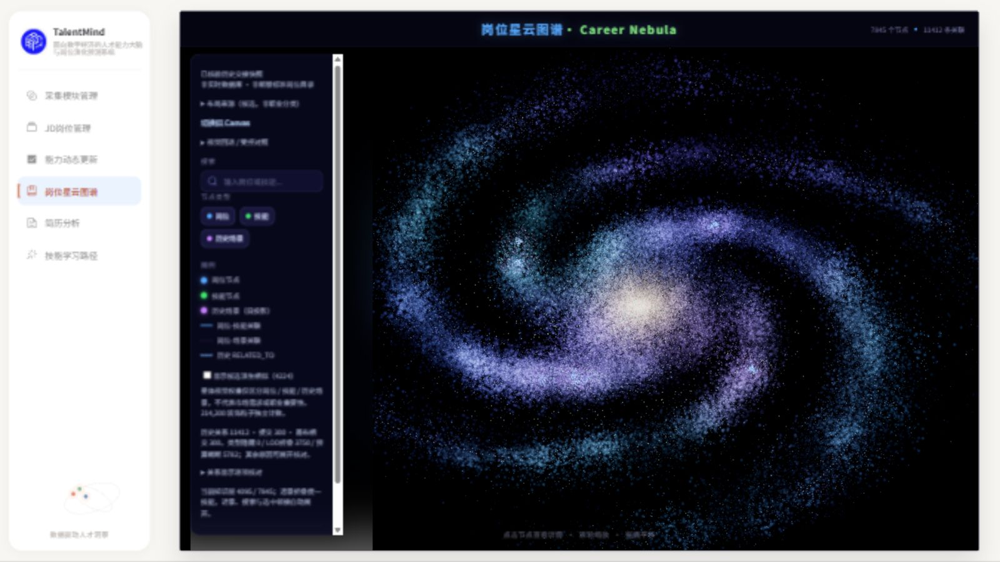
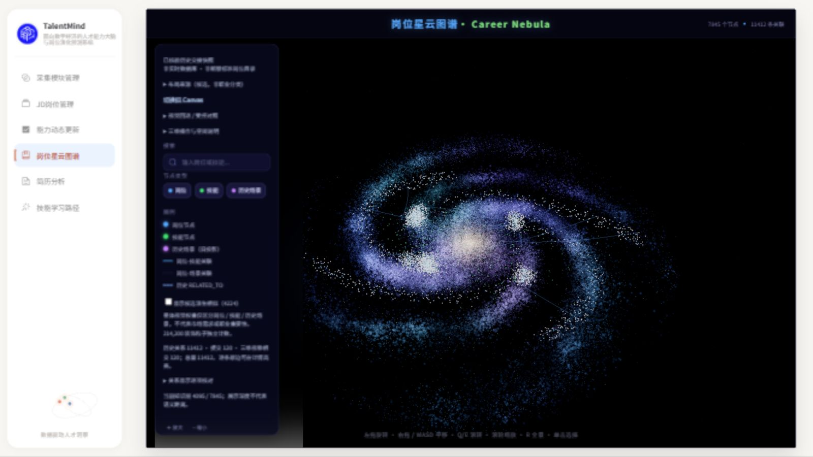
三组均为223节点 / 222原边。P2.3可自由环绕、逐边高亮和完整返回。历史job_count225与真实直连222分别标注。
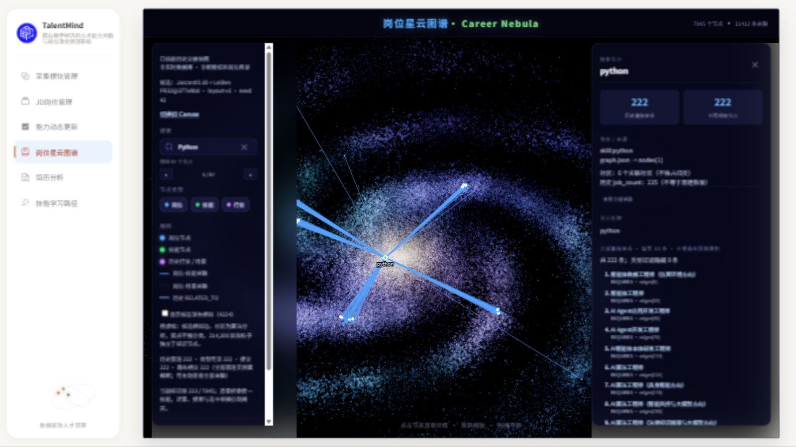
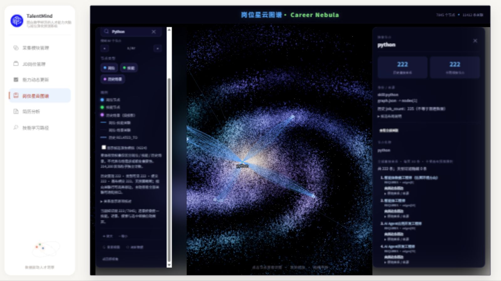
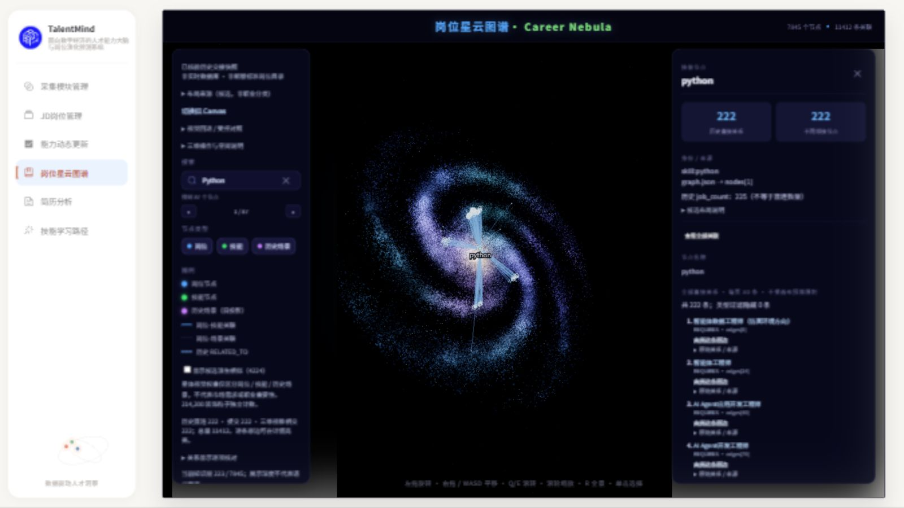
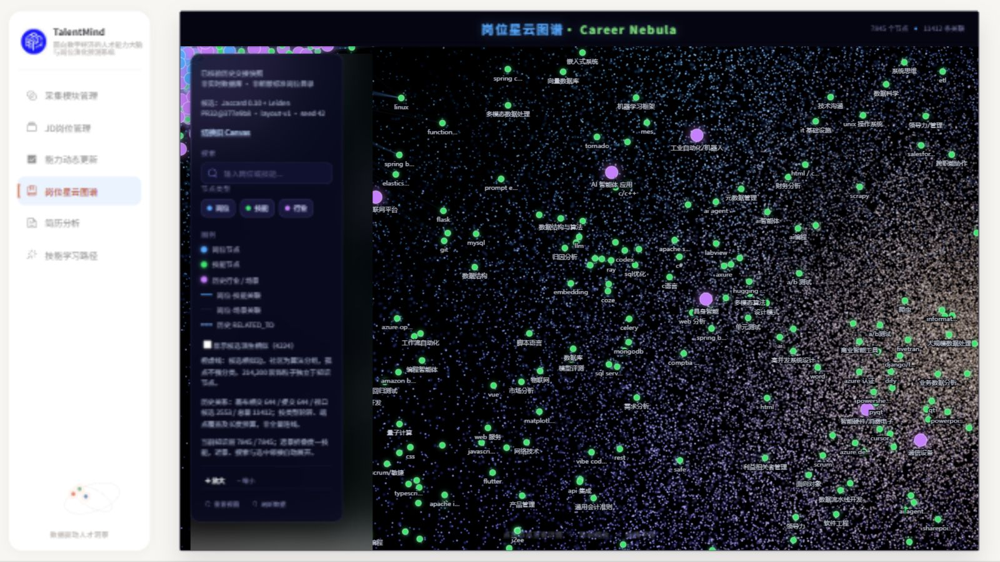
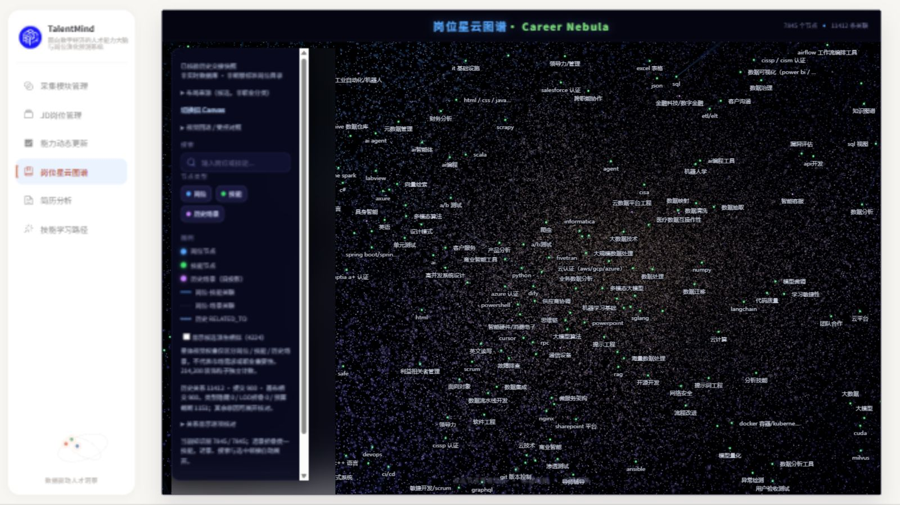
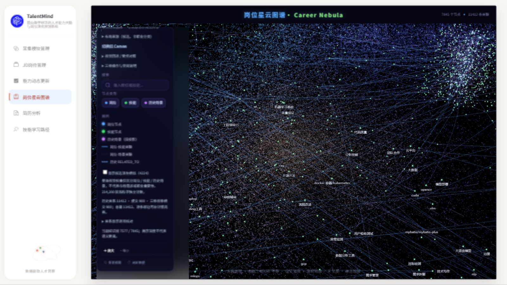
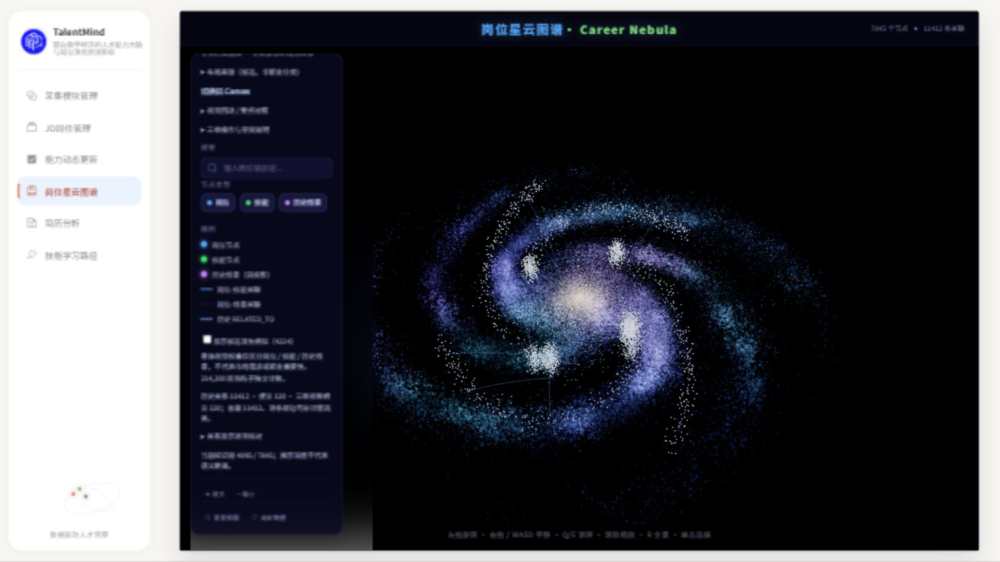
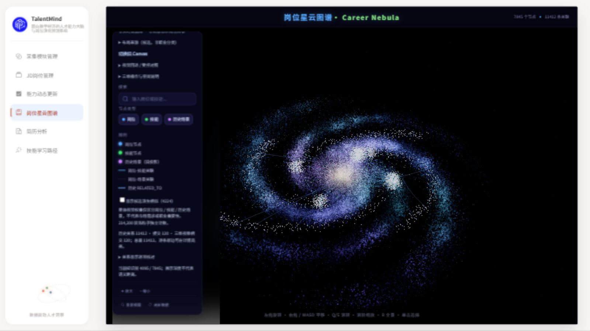
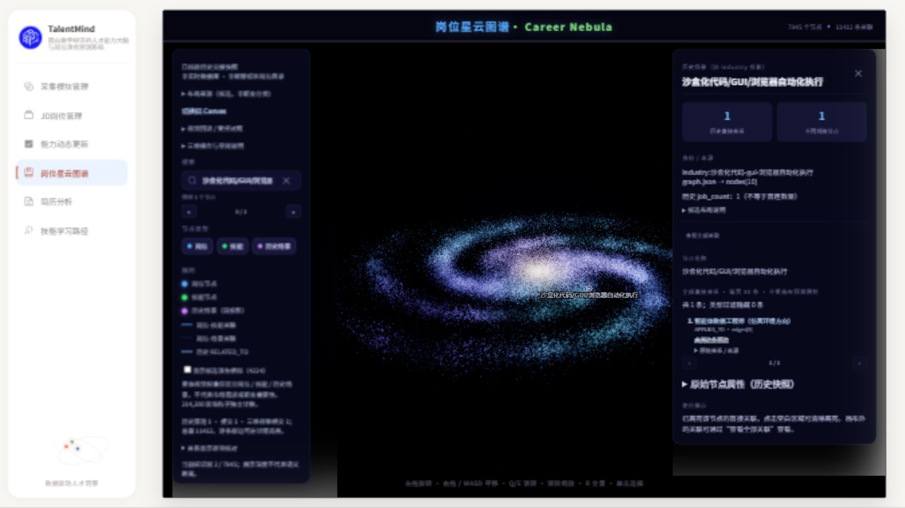